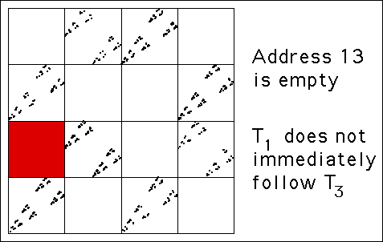

First, we note some address length 2 subsquares appear empty. What are these addresses, and what are the bin-to-bin combinations that cannot occur?
|  |
| Click the picture for the next square |
| Empty addresses | Forbidden transitions | Forbidden sequences |
| 12 | 2 → 1 | 1 cannot follow 2 |
| 13 | 3 → 1 | 1 cannot follow 3 |
| 22 | 2 → 2 | 2 cannot follow 2 |
| 23 | 3 → 2 | 2 cannot follow 3 |
| 32 | 2 → 3 | 3 cannot follow 2 |
| 33 | 3 → 3 | 3 cannot follow 3 |
| 41 | 1 → 4 | 4 cannot follow 1 |
| 44 | 4 → 4 | 4 cannot follow 4 |
Return to IFS Driven by Dynamical Systems.